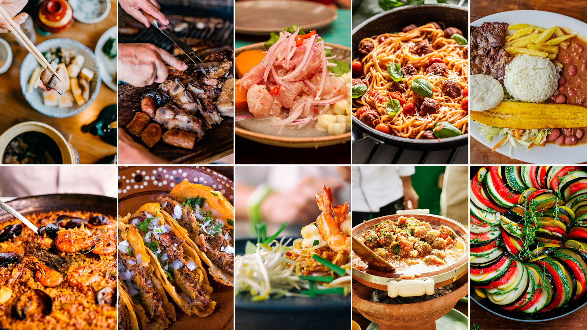

Recetas tradicionales del Mundo: Sabores que Unen Culturas

¿Listo para un tour gastronómico sin salir de tu cocina? Aquí encontrarás un mix de recetas tradicionales de todos los rincones del planeta. Desde los tacos más auténticos de México hasta un ramen calentito de Japón, cada plato viene con su propia historia y mucho sazón. La comida es nuestra forma de viajar, conectar y celebrar, así que prepárate para descubrir sabores únicos y llevar un pedacito del mundo a tu mesa.
¡Vamos a cocinar y a romper fronteras!
Tortilla de patatas
La tortilla de patatas es un clásico de la cocina española, simple y deliciosa.
Con tan solo patatas, huevos, y un toque de cebolla si te gusta, se crea un plato que es pura tradición y sabor. Perfecta para compartir, ya sea en un picnic, en casa con amigos, o como tapa en un bar. ¡Siempre es un acierto!
Ingredientes:
Para una tortilla mediana (4 personas).
6 huevos (si son de corral o criados en suelo, mejor).
2 kg de patatas.
500 ml de aceite de oliva.
1/2 cebolla (opcional).
Receta
Pelamos las patatas y las cortamos en rodajas; cuanto más finas, mejor.
Cortamos la cebolla en juliana. Esta parte es opcional (por mucha controversia que exista).
En una sartén con todo el aceite, volcamos la patata y la cebolla y pochamos durante 40 minutos o hasta que la textura de la patata esté suave.
Colamos la patata con la cebolla, batimos los huevos en un bol con una pizca de sal y volcamos nuestra patata y cebolla. Mezclamos con unas varillas para romper un poco la patata.
Calentamos una sartén antiadherente o de teflón con un poco de aceite del paso anterior y, cuando humee el aceite o esté a 190 ºC, volcamos nuestra mezcla.
Bajamos el fuego a medio-bajo y movemos enérgicamente la mezcla en la sartén. Cuando veamos que el borde se empieza a cuajar, cogemos un plato más grande que la sartén y, estando húmedo, damos la vuelta a la tortilla.
Dejamos al gusto de textura o cuajado y servimos en el plato.